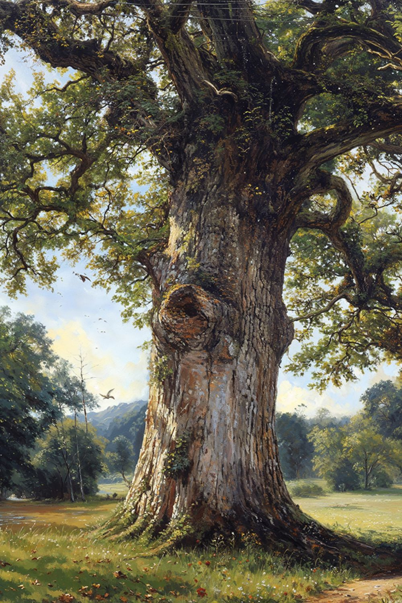

Guys. I am archiving all my Sir Whiskerton stories and my universe as a repository on Github. This element of my (personal) life; this "escapism" is a hobby of mine, and has evolved, over time, into something huge. This post is one such element of that universe. I hope that you enjoy the read.
IDENTIFICATION
Name: Old Mable
Type: Ancient Tree / Living Landmark
Location: The southeastern edge of the farm, where the pasture meets the wild wood
Status: Living, thriving, deeply rooted
First Documented: Unknown (predates the farm)
PHYSICAL DESCRIPTION
Old Mable is not a tree you look at—she is a tree you experience.
Her trunk is massive, wider than the Farmer's truck, wrapped in bark so deeply furrowed it resembles the skin of some ancient, benevolent creature. The furrows are home to entire ecosystems—tiny ferns, mosses, lichens in colors from silver to sulfur. In certain light, her bark seems to glow with a faint, greenish gold, as if she remembers sunlight from centuries past and still holds it.
Her branches do not reach so much as they gesture. They twist and turn in ways that seem impossible, defying the straight lines of younger trees. Some dip so low they brush the ground, forming natural arches and hidden chambers. Others reach skyward with the patience of things that have all the time in the world.
At her base, a spring emerges from between two massive roots—roots that have clearly shaped the flow of water for generations. The water is cold, clear, and tastes faintly of moss and something else, something that makes you want to sit down and stay awhile. The moss around the spring is thick and deep, a carpet of green that muffles sound and invites bare feet.
THE TREE HOUSE
High in Old Mable's branches, tucked into the crook of three massive limbs, sits a wooden platform. It was built long ago by someone's father—no one remembers whose. The wood is gray with age, soft with weather, but still solid. A single rail remains on one side; the other three have long since fallen away.
The platform is reachable by a series of footholds—not steps, just places where generations of climbers have worn the bark smooth. Children still climb it, though fewer each year. They sit on the platform and look out over the farm, over the fields, over the whole world, and they feel, for a moment, like kings and queens of something important.
A rusted coffee can sits in one corner of the platform. Inside, there are:
Three marbles (one cat's eye, one clear, one chipped)
A note in faded pencil: "I was here. So were you."
A single feather, blue jay
A bottle cap from a soda no one remembers
No one adds to the can. No one takes from it. It simply is.
THE CARVINGS
On the south-facing side of Old Mable's trunk, at about chest height on a tall person, there is a heart. It is not carved deeply—just enough to mark the bark. Inside the heart, two sets of initials: J.M. + E.R. The date below is nearly illegible: something like '47 or '57 or maybe '07. The bark has grown around the carving, partially obscuring it, as if Old Mable is keeping the secret safe.
Nearby, other carvings appear:
A simple star, no initials
The words "I WAS HERE" in block letters, childish and earnest
A tiny face, barely visible, with a smile that might be happy or sad depending on the light
One word: "WHY?" (no answer follows)
The carvings are not vandalism. They are witness. They say: Someone was here. Someone felt something. Someone mattered.
THE POTTERY
Half-buried in the moss near the spring's edge, fragments of pottery rest. They are old—not ancient, but old enough that no one remembers their origin. A piece of a blue-and-white bowl. A handle from something that might have been a cup. A shard with a painted flower, faded to ghostliness.
The chipmunks have incorporated some pieces into their tunnels. A blue shard serves as a doorstop for one entrance. A handle lies near another, worn smooth by countless tiny paws.
No one digs them up. No one wonders about them aloud. They are simply there, part of Old Mable's accumulation, her collection of human things that have become natural things.
THE INHABITANTS
Old Mable is not lonely. She hosts:
A family of gray squirrels who nest in her highest crotch. They are argumentative and opinionated and have been observed holding what appear to be debates on her lower branches.
A clan of chipmunks who live among her roots, their tunnels weaving through the earth around the spring. They are industrious, secretive, and have an elaborate system of warning calls that sounds, to human ears, like angry squeaking.
At least three species of birds who nest in her branches over the course of the year. They do not always get along, but Old Mable seems to mediate.
Countless insects, spiders, and small creatures who treat her as a city, a sanctuary, a home.
At dusk, the squirrels argue. At dawn, the birds sing. All day, the chipmunks scold. Old Mable absorbs it all, her leaves rustling in a way that might be commentary or might just be wind.
THE FEELING
People who visit Old Mable report similar experiences:
A sense of being watched, but not in a frightening way—in a witnessed way. As if someone is paying attention.
A feeling that time moves differently near her roots. An hour can feel like minutes. Minutes can feel like hours.
A strange clarity after sitting against her trunk. Problems that seemed insoluble become manageable. Questions that had no answers find their own resolution.
A recurring dream, reported by several visitors independently: You are a child again. You climb Old Mable. At the top, someone is waiting for you. They smile. You do not know their name, but you know they love you.
THE LORE (Minor)
It is said that if you whisper a secret into Old Mable's bark and press your ear to the spot, you will hear the answer—not in words, but in the rustle of leaves.
The spring at her base is believed to have healing properties. Not miraculous healing, but the kind that comes from drinking cold, clean water after a long walk.
Some say that on certain nights—particularly the equinoxes—Old Mable's roots glow faintly, visible through the moss, pulsing with the rhythm of the earth.
The chipmunks have never been observed to fight. This is considered deeply unusual and possibly mystical.
THE MYSTERY
No one knows how Old Mable got her name. She was already "Old Mable" when the Farmer's grandfather was a boy. Some say she was named for a woman who loved this spot and is buried beneath her roots. Some say "Mable" is a corruption of something older, something in a language no one speaks anymore.
The initials in the heart—J.M. + E.R.—belong to someone, but no one knows who. The date is illegible. The story is lost.
But the heart remains. The carving remains. The love that put it there remains, somehow, in the air around Old Mable, in the way the light falls on her bark, in the feeling that someone, somewhere, still remembers.
THE INVITATION
Old Mable does not ask for anything. She does not demand worship or attention or offerings. She simply stands, rooted and patient, holding her spring, her tree house, her carvings, her pottery, her squirrels, her chipmunks, her birds, her secrets.
You are welcome to visit. You are welcome to sit against her trunk. You are welcome to drink from her spring. You are welcome to climb to the platform and look out over the farm.
You are welcome to add your own initials to her bark, if you must. But she does not require it. She already knows you were here. She felt you the moment you arrived.
THE ARTIFACT'S PLACE
Old Mable is not a character. She does not speak, does not move, does not intervene. But she is present. She is the witness. The accumulator. The one who holds the farm's memories when no one else remembers.
She appears in stories as a location, a meeting place, a site of contemplation. Characters visit her when they need to think, to grieve, to celebrate, to simply be. She receives them all equally.
In the Commonplace Books, Old Mable might appear as:
A full-page illustration of her trunk, with the heart carved and the pottery visible
A small map showing her location at the farm's edge
A pressed leaf from her branches, included in a pocket
A page of "chipmunk observations" (hand-drawn, slightly whimsical)
A recipe for tea made from the moss near her spring (purported to aid sleep)
THE FINAL WORD
Old Mable endures. She has endured droughts and floods, storms and stillnesses, children climbing and lovers carving and time passing. She will endure long after the farm is gone, long after the last person who remembers her name has forgotten it.
But for now, she is here. At the edge of the farm. Waiting. Witnessing. Welcoming.
Come sit against her trunk. The moss is soft. The spring is cold. The squirrels are arguing about something that does not matter. You are exactly where you need to be.
—Artifact Bio: Old Mable, documented for the Sir Whiskerton Commons by [observer], on a Tuesday afternoon when the light through her leaves was particularly golden.